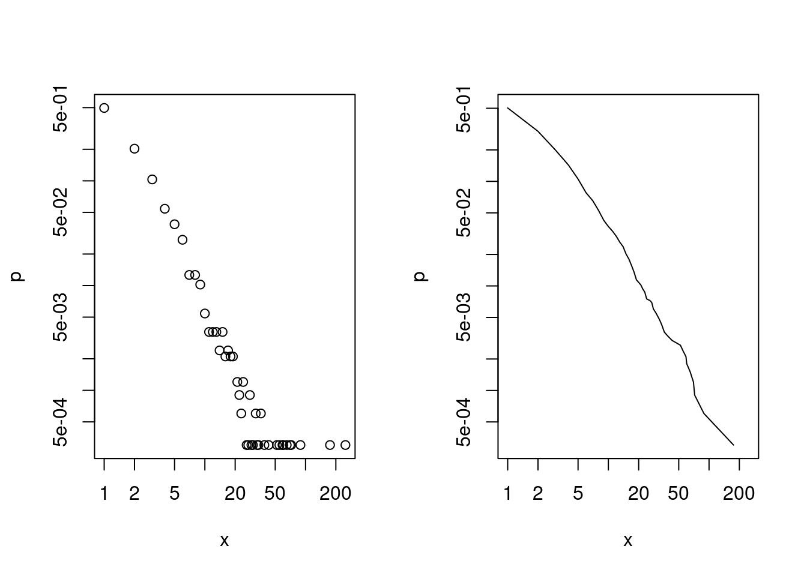

Min. 1st Qu. Median Mean 3rd Qu. Max.
1.00 1.00 2.00 14.77 5.00 2753.00 Modelling Degree Distributions
The power law often arises as a way to model the degree distribution of networks as they are assumed to be a result of a preferential attachment model that is claimed to have degree that follow the power law. However, this is only true for the bulk of the data and collapses in a lot of cases at the right tail. Here, we show the inadequacy of the power law for modelling the right tails of several data sets and introduce a new model that intends to be more accurate. This model is a mixture of a power law and a discretised variation of the Generalised Pareto distribution from extreme value theory; making it a natural distribution to try to use. One downside is the increase in the number of parameter from just one with the power law to four with this new mixture model. To see if this increase is necessary we compare it to a model that is the mixture of two power laws, that while it still has more parameters than the single power law , it does not have as many as the power law IGP mixture.
The models
Probability Mass Function
The power law has a probability mass function as defined as:
\[ f(x) = \frac{x^{-(\alpha+1)}}{\zeta(\alpha+1)},\qquad x=1,2,\ldots \]
where \(\alpha\in\mathbb{R}^+\) and \(\zeta(s) = \sum_{k=1}^\infty k^{-s}\) is the Riemann Zeta function.
This appears as a straight line on a log-log plot.
Cumulative Mass Function and Survival
Now we can find that the survival function of this model is:
\[ S(x) = 1-\frac{\sum_{k=1}^\infty k^{-(\alpha+1)}}{\zeta(\alpha+1)}, \qquad x=1,2,\ldots \]
Likelihood
For a set of data \(\boldsymbol{x} = (x_1, x_2, \ldots,x_N)^T\), where each \(x_i\) independently follows this model, we can calculate the likelihood to be:
\[ L(\boldsymbol{x}) = \zeta(\alpha+1)^{-N}\prod_{i=1}^Nx_i^{-(\alpha+1)} \]
For this model we look to use methods from extreme value theory to model the right hand tail of the data. If we were in a continuous setting and we wanted to use a threshold model then we would likely consider using the Generalised Pareto distribution, however the degrees of nodes in a network are discrete in nature. So, we define the Integrated Generalised Pareto distribution.
Integrated Generalised Pareto Distribution
The Generalised Pareto distribution with threshold \(u\in \mathbb{R}^+\) has the survival function:
\[ G_u(h) = \left(1+\frac{\xi(h-u)}{\sigma_u}\right)^{-1/\xi}, \qquad h>u \]
where \(u,\sigma_u \in \mathbb{R}^+\) and \(\xi\in\mathbb{R}\).
For this model we consider the distribution of \(\lceil H\rceil\) and \(\lfloor H\rfloor\), where \(H|H>u\sim GP_u(\sigma_u, \xi)\). We consider both cases individually, referring to the former as type 1 and the latter as type 2.
Type 1
\[\begin{align} \Pr(X=x|X>u) &= \Pr(H>x-1|H>\lfloor u \rfloor) - \Pr(H>x|H>\lfloor u \rfloor)\\ &=\left(1+\frac{\xi(x-\lfloor u \rfloor-1)}{\sigma_{\lfloor u \rfloor}}\right)^{-1/\xi} -\left(1+\frac{\xi(x-\lfloor u \rfloor)}{\sigma_{\lfloor u \rfloor}}\right)^{-1/\xi} \end{align}\]The data
For the CRAN data we are only really interested in the in-degree of nodes i.e. the number of packages that either depend on or import each package.
Summary

Summary
Min. 1st Qu. Median Mean 3rd Qu. Max.
1.00 1.00 1.00 6.96 3.00 779.00 This data comes from a network that is generated by the Barabasi-Albert network generation algorithm.
Summary
Min. 1st Qu. Median Mean 3rd Qu. Max.
1.000 1.000 1.000 3.016 3.000 221.000 
This data comes from a sample of internet peer to peer users in 2002, sourced from SNAP . Again, we are only looking at the in-degree.
Summary
Min. 1st Qu. Median Mean 3rd Qu. Max.
1.00 1.00 2.00 3.34 4.00 91.00